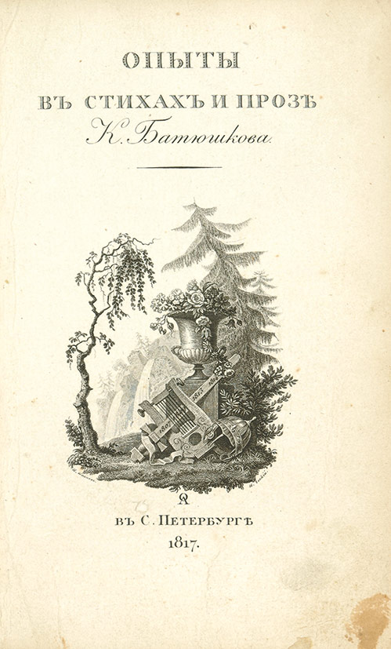
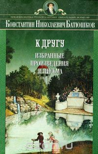
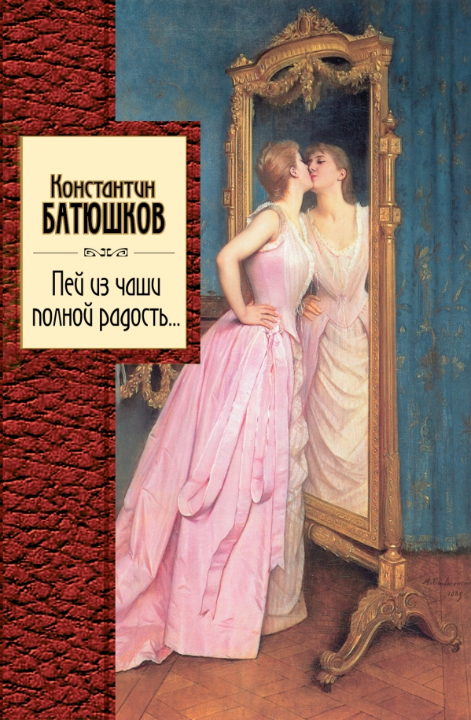

Библиография Батюшкова К.Н.
-

Опыты в стихах и прозе. Часть 1. Проза
Настоящее издание сочинений К. Н. Батюшкова представляет читателю все стороны его творчества: стихотворения, прозаические опыты, литературно-критические и историко-литературные статьи, переводы, записные книжки и письма. Единственной попыткой собрать воедино наследие писателя были вышедшие более ста лет назад "Сочинения" в трех томах (СПб., 1885 - 1887), изданные его младшим братом П. Н. Батюшковым и откомментированные выдающимися филологами Л. Н. Майковым и В. И. Саитовым.
Читать online
Купить книгу - 
Опыты в стихах и прозе. Часть 2. Стихи
Настоящее издание сочинений К. Н. Батюшкова представляет читателю все стороны его творчества: стихотворения, прозаические опыты, литературно-критические и историко-литературные статьи, переводы, записные книжки и письма. Единственной попыткой собрать воедино наследие писателя были вышедшие более ста лет назад "Сочинения" в трех томах (СПб., 1885 - 1887), изданные его младшим братом П. Н. Батюшковым и откомментированные выдающимися филологами Л. Н. Майковым и В. И. Саитовым.
Читать online
Купить книгу - 
К другу. Избранные произведения и письма
Константин Николаевич Батюшков - один из наиболее самобытных русских писателей-классиков первых десятилетий XIX века, оказавших заметное влияние на творчество современников, включая А.С.Пушкина. В настоящем томе печатаются все стихотворения, выборочно - прозаические сочинения и письма, наиболее характерные для личности автора, участника Отечественной войны 1812 года. Читатель впервые получит целостное представление о жанрово разнообразной литературной деятельности обаятельно-дружелюбного поэта, отразившего высокую духовность русской литературы.
Купить книгу - 
Пей из чаши полной радость...
Лирика К. Н. Батюшкова (1787 - 1855) - одно из выдающихся явлений русской поэзии. Лирика поэта раскрывает сложные, разнообразные переживания и чувства. Стихотворения К. Батюшкова виртуозны, музыкальны, отмечены тонкостью и богатством красок, пластичностью образов. Благодаря чему многие произведения Батюшкова были положены на музыку: М. Глинка написал романс "Мой гений" ( О память сердца! ты сильней...") на стихи К. Батюшкова, П.И. Чайковский - романс Полины из оперы "Пиковая дама", хорошо известны военные романсы поэта, написанные как отклик на события 1812 года, в их числе широко известный "Гусар".
Купить книгу